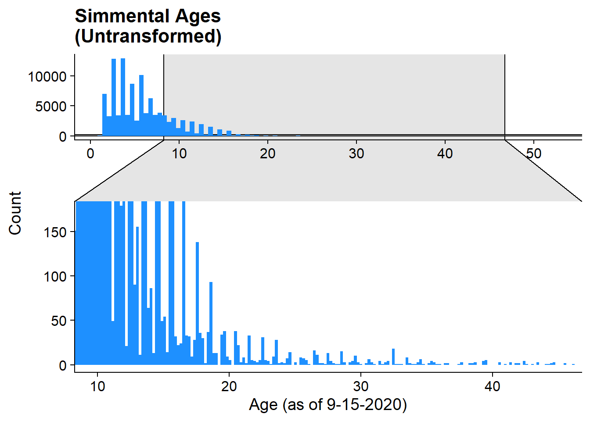
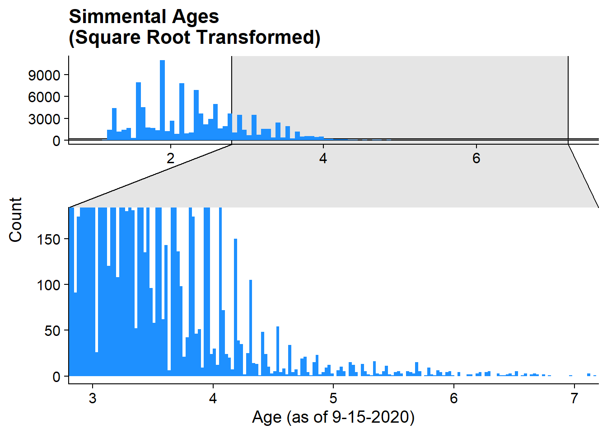

phenotype_exploration
Troy Rowan
2020-09-16
Last updated: 2020-09-25
Checks: 6 1
Knit directory: local_adaptation_sequence/
This reproducible R Markdown analysis was created with workflowr (version 1.6.2). The Checks tab describes the reproducibility checks that were applied when the results were created. The Past versions tab lists the development history.
Great! Since the R Markdown file has been committed to the Git repository, you know the exact version of the code that produced these results.
Great job! The global environment was empty. Objects defined in the global environment can affect the analysis in your R Markdown file in unknown ways. For reproduciblity it’s best to always run the code in an empty environment.
The command set.seed(20200709) was run prior to running the code in the R Markdown file. Setting a seed ensures that any results that rely on randomness, e.g. subsampling or permutations, are reproducible.
Great job! Recording the operating system, R version, and package versions is critical for reproducibility.
Nice! There were no cached chunks for this analysis, so you can be confident that you successfully produced the results during this run.
Using absolute paths to the files within your workflowr project makes it difficult for you and others to run your code on a different machine. Change the absolute path(s) below to the suggested relative path(s) to make your code more reproducible.
| absolute | relative |
|---|---|
| C:/Users/troyrowan/Documents/GitHub/local_adaptation_sequence | . |
Great! You are using Git for version control. Tracking code development and connecting the code version to the results is critical for reproducibility.
The results in this page were generated with repository version 752c0c1. See the Past versions tab to see a history of the changes made to the R Markdown and HTML files.
Note that you need to be careful to ensure that all relevant files for the analysis have been committed to Git prior to generating the results (you can use wflow_publish or wflow_git_commit). workflowr only checks the R Markdown file, but you know if there are other scripts or data files that it depends on. Below is the status of the Git repository when the results were generated:
Ignored files:
Ignored: .Rhistory
Ignored: .Rproj.user/
Ignored: data/200907_SIM/
Ignored: data/200910_RAN/
Ignored: data/Bos_taurus.ARS-UCD1.2.101.gtf.gz
Ignored: data/Bos_taurus.ARS-UCD1.2.QTL.gff.gz
Ignored: data/Johnston_ATAC-seq/
Ignored: data/animal_table.rds
Ignored: data/prism_climate_data/
Ignored: data/prism_dataframe.csv
Ignored: data/uszips.csv
Ignored: desktop.ini
Ignored: output/200822_Lab_IDs.csv
Ignored: output/200907_Lab_IDs.csv
Ignored: output/200907_SIM/
Ignored: output/200909_RAN_Lab_IDs.csv
Ignored: output/200910_RAN/
Ignored: output/200910_RAN_Lab_IDs.csv
Ignored: output/desktop.ini
Ignored: output/k10.allvars.seed2.rds
Ignored: output/k9.allvars.seed1.rds
Ignored: output/k9.allvars.seed2.rds
Ignored: output/k9.threevars.seed1.rds
Ignored: output/k9.threevars.seed2.rds
Ignored: output/kmeans_plotlist.RDS
Ignored: output/zipcode_zones.csv
Untracked files:
Untracked: analysis/GPSM.Rmd
Untracked: code/countgens_RAN.R
Untracked: ftpconfigs/
Untracked: functions.R
Unstaged changes:
Modified: .ftpconfig
Modified: .gitignore
Modified: analysis/animal_locations.Rmd
Modified: analysis/sex_GWAS.Rmd
Modified: code/annotation_functions.R
Modified: code/config/200907_SIM.GPSM.config.yaml
Modified: code/config/200910_RAN.config.yaml
Modified: code/config/200910_RAN_noLSF.config.yaml
Modified: code/snakemake_files/GCTA.snakefile
Deleted: data/README.md
Note that any generated files, e.g. HTML, png, CSS, etc., are not included in this status report because it is ok for generated content to have uncommitted changes.
These are the previous versions of the repository in which changes were made to the R Markdown (analysis/phenotype_exploration.Rmd) and HTML (docs/phenotype_exploration.html) files. If you’ve configured a remote Git repository (see ?wflow_git_remote), click on the hyperlinks in the table below to view the files as they were in that past version.
| File | Version | Author | Date | Message |
|---|---|---|---|---|
| Rmd | 752c0c1 | Troy Rowan | 2020-09-25 | Trying to get figures to render online |
| html | 1156bd1 | Troy Rowan | 2020-09-25 | Build site. |
| Rmd | ecef16d | Troy Rowan | 2020-09-25 | wflow_publish(files = c(“analysis/phenotype_exploration.Rmd”)) |
| Rmd | 7dce809 | Troy Rowan | 2020-09-20 | Added file for exploring phenotype distributions |
Simmental
simmental =
read_csv("output/200907_SIM/phenotypes/200907_SIM.info.csv") %>%
mutate(sqrt_age = age^0.5,
cbrt_age = age^0.333,
log_age = log(age),
bc_age = bcPower(age, lambda = 0.0345))Age Summary Stats
simmental %>%
select(age) %>%
summarize(mean_age = mean(age, na.rm = TRUE),
median_age = median(age, na.rm = TRUE),
sd_age = sd(age, na.rm = TRUE),
min_age = min(age, na.rm = TRUE),
max_age = max(age, na.rm = TRUE))# A tibble: 1 x 5
mean_age median_age sd_age min_age max_age
<dbl> <dbl> <dbl> <dbl> <dbl>
1 5.90 5.06 3.75 1.01 52.5Transformations to Age:
Untransformed
simmental %>%
select(age) %>%
ggplot()+
geom_histogram(aes(x = age), mutate(simmental, z = FALSE), bins = 100, fill = "dodgerblue")+
geom_histogram(aes(x = age), mutate(simmental, z = TRUE), bins = 250, fill = "dodgerblue")+
theme_cowplot()+
labs(title = "Simmental Ages\n(Untransformed)", x = "Age (as of 9-15-2020)", y = "Count")+
facet_zoom(xlim = c(10,45), ylim = c(0,175), zoom.data = z, horizontal = FALSE)
Square Root
simmental%>%
ggplot()+
geom_histogram(aes(x = sqrt_age), mutate(simmental, z = FALSE), bins = 100, fill = "dodgerblue")+
geom_histogram(aes(x = sqrt_age), mutate(simmental, z = TRUE), bins = 250, fill = "dodgerblue")+
theme_cowplot()+
labs(title = "Simmental Ages\n(Square Root Transformed)", x = "Age (as of 9-15-2020)", y = "Count")+
facet_zoom(xlim = c(3,7), ylim = c(0,175), zoom.data = z, horizontal = FALSE)
Cube Root
simmental%>%
ggplot()+
geom_histogram(aes(x = cbrt_age), mutate(simmental, z = FALSE), bins = 100, fill = "dodgerblue")+
geom_histogram(aes(x = cbrt_age), mutate(simmental, z = TRUE), bins = 250, fill = "dodgerblue")+
theme_cowplot()+
labs(title = "Simmental Ages\n(Cube Root Transformed)", x = "Age (as of 9-15-2020)", y = "Count")+
facet_zoom(xlim = c(2,3.6), ylim = c(0,175), zoom.data = z, horizontal = FALSE)Log
simmental%>%
ggplot()+
geom_histogram(aes(x = log_age), mutate(simmental, z = FALSE), bins = 100, fill = "dodgerblue")+
geom_histogram(aes(x = log_age), mutate(simmental, z = TRUE), bins = 250, fill = "dodgerblue")+
theme_cowplot()+
labs(title = "Simmental Ages\n(log Transformed)", x = "Age (as of 9-15-2020)", y = "Count")+
facet_zoom(xlim = c(2,3.6), ylim = c(0,175), zoom.data = z, horizontal = FALSE)Box-Cox
simmental%>%
ggplot()+
geom_histogram(aes(x = bc_age), mutate(simmental, z = FALSE), bins = 100, fill = "dodgerblue")+
geom_histogram(aes(x = bc_age), mutate(simmental, z = TRUE), bins = 250, fill = "dodgerblue")+
theme_cowplot()+
labs(title = "Simmental Ages\n(Box-Cox Transformed)", x = "Age (as of 9-15-2020)", y = "Count")+
facet_zoom(xlim = c(2,3.6), ylim = c(0,175), zoom.data = z, horizontal = FALSE)Generation Counts
Summary Stats for Generation Number
Unable to actually calculate this at this point as we haven’t received the updated pedigree from Red Angus
simmental %>%
select(equiGen, fullGen, maxGen) %>%
summarize_all(list(mean, median, sd, min, max))%>%
gather(key = "key", value = "value") %>%
separate(key, c("variable", "stat"), sep = "_") %>%
spread(stat, value) %>%
rename(generation_count = variable, mean = fn1, median = fn2, sd = fn3, min = fn4, max = fn5)# A tibble: 3 x 6
generation_count mean median sd min max
<chr> <dbl> <dbl> <dbl> <dbl> <dbl>
1 equiGen 7.26 8.04 2.47 0 11.4
2 fullGen 3.73 4 1.89 0 7
3 maxGen 16.4 18 4.75 0 23 Distributions of Generation
equiGen
Note the high number of “zero” generations here. Wondering if we shouldn’t count those as NA if we choose to go this route?
simmental%>%
ggplot()+
geom_histogram(aes(x = equiGen), bins = 100, fill = "dodgerblue")+
theme_cowplot()+
labs(title = "Simmental Equivalent Generations", x = "Age (as of 9-15-2020)", y = "Count")equiGen squared
simmental%>%
ggplot()+
geom_histogram(aes(x = equiGen^2), bins = 100, fill = "dodgerblue")+
theme_cowplot()+
labs(title = "Simmental Equivalent Generations Squared", x = "Age (as of 9-15-2020)", y = "Count")fullGen
simmental%>%
ggplot()+
geom_histogram(aes(x = fullGen), bins = 10, fill = "dodgerblue")+
theme_cowplot()+
labs(title = "Simmental Full Generations", x = "Age (as of 9-15-2020)", y = "Count")maxGen
simmental%>%
ggplot()+
geom_histogram(aes(x = maxGen), bins = 25, fill = "dodgerblue")+
theme_cowplot()+
labs(title = "Simmental Max Generations", x = "Age (as of 9-15-2020)", y = "Count")Red Angus
redangus = read_csv("output/200910_RAN/phenotypes/200910_RAN.info.csv")Exploring Generation Proxy Phenotypes
Calculating Generation Number
countGen(
data.frame(
id = 1:5,
dam = c(0,0,1,1,4),
sire = c(0,0,2,2,3)
)
)
ran_ped =
read_csv("data/200910_RAN/All_Animals_SireDam.csv") %>%
select(id = anm_key, sire = sire_key, dam = dam_key) %>%
replace_na(list(sire = 0, dam = 0))
ran_ped =
orderPed(ran_ped)Age Summary Stats
redangus %>%
select(age) %>%
summarize(mean_age = mean(age, na.rm = TRUE),
median_age = median(age, na.rm = TRUE),
sd_age = sd(age, na.rm = TRUE),
min_age = min(age, na.rm = TRUE),
max_age = max(age, na.rm = TRUE))# A tibble: 1 x 5
mean_age median_age sd_age min_age max_age
<dbl> <dbl> <dbl> <dbl> <dbl>
1 4.37 3.59 3.07 0.902 45.5Transformations to Age:
Untransformed
ages =
redangus %>%
select(age) %>%
mutate(sqrt_age = age^0.5,
cbrt_age = age^0.333,
log_age = log(age),
bc_age = bcPower(age, lambda = -0,237)
)
redangus %>%
select(age) %>%
ggplot()+
geom_histogram(aes(x = age), mutate(redangus, z = FALSE), bins = 100, fill = "indianred")+
geom_histogram(aes(x = age), mutate(redangus, z = TRUE), bins = 250, fill = "indianred")+
theme_cowplot()+
labs(title = "Red Angus Ages\n(Untransformed)", x = "Age (as of 9-15-2020)", y = "Count")+
facet_zoom(xlim = c(10,45), ylim = c(0,175), zoom.data = z, horizontal = FALSE)Square Root
ages%>%
ggplot()+
geom_histogram(aes(x = sqrt_age), mutate(ages, z = FALSE), bins = 100, fill = "indianred")+
geom_histogram(aes(x = sqrt_age), mutate(ages, z = TRUE), bins = 250, fill = "indianred")+
theme_cowplot()+
labs(title = "Red Angus Ages\n(Square Root Transformed)", x = "Age (as of 9-15-2020)", y = "Count")+
facet_zoom(xlim = c(3,7), ylim = c(0,175), zoom.data = z, horizontal = FALSE)Cube Root
ages%>%
ggplot()+
geom_histogram(aes(x = cbrt_age), mutate(ages, z = FALSE), bins = 100, fill = "indianred")+
geom_histogram(aes(x = cbrt_age), mutate(ages, z = TRUE), bins = 250, fill = "indianred")+
theme_cowplot()+
labs(title = "Red Angus Ages\n(Cube Root Transformed)", x = "Age (as of 9-15-2020)", y = "Count")+
facet_zoom(xlim = c(2,3.6), ylim = c(0,175), zoom.data = z, horizontal = FALSE)
Log
ages%>%
ggplot()+
geom_histogram(aes(x = log_age), mutate(ages, z = FALSE), bins = 100, fill = "indianred")+
geom_histogram(aes(x = log_age), mutate(ages, z = TRUE), bins = 250, fill = "indianred")+
theme_cowplot()+
labs(title = "Red Angus Ages\n(log Transformed)", x = "Age (as of 9-15-2020)", y = "Count")+
facet_zoom(xlim = c(2,3.6), ylim = c(0,175), zoom.data = z, horizontal = FALSE)Box-Cox
ages%>%
ggplot()+
geom_histogram(aes(x = bc_age), mutate(ages, z = FALSE), bins = 100, fill = "indianred")+
geom_histogram(aes(x = bc_age), mutate(ages, z = TRUE), bins = 250, fill = "indianred")+
theme_cowplot()+
labs(title = "Red Angus Ages\n(Box-Cox Transformed)", x = "Age (as of 9-15-2020)", y = "Count")+
facet_zoom(xlim = c(2,3.6), ylim = c(0,175), zoom.data = z, horizontal = FALSE)Summary Stats for Generation Number
Unable to actually calculate this at this point as we haven’t received the updated pedigree from Red Angus
# redangus %>%
# select(age) %>%
# summarize(mean_age = mean(age, na.rm = TRUE),
# median_age = median(age, na.rm = TRUE),
# sd_age = sd(age, na.rm = TRUE),
# min_age = min(age, na.rm = TRUE),
# max_age = max(age, na.rm = TRUE))
sessionInfo()R version 4.0.2 (2020-06-22)
Platform: x86_64-w64-mingw32/x64 (64-bit)
Running under: Windows 10 x64 (build 19041)
Matrix products: default
locale:
[1] LC_COLLATE=English_United States.1252
[2] LC_CTYPE=English_United States.1252
[3] LC_MONETARY=English_United States.1252
[4] LC_NUMERIC=C
[5] LC_TIME=English_United States.1252
attached base packages:
[1] stats graphics grDevices utils datasets methods base
other attached packages:
[1] car_3.0-9 carData_3.0-4 optiSel_2.0.3 EnvStats_2.3.1
[5] forcats_0.5.0 stringr_1.4.0 dplyr_1.0.2 readr_1.3.1
[9] tidyr_1.1.2 tibble_3.0.3 tidyverse_1.3.0 ggforce_0.3.2
[13] pedigree_1.4 reshape_0.8.8 HaploSim_1.8.4 Matrix_1.2-18
[17] lubridate_1.7.9 here_0.1 factoextra_1.0.7 ggplot2_3.3.2
[21] purrr_0.3.4 cowplot_1.1.0 ggthemes_4.2.0 maps_3.3.0
[25] knitr_1.30 workflowr_1.6.2
loaded via a namespace (and not attached):
[1] colorspace_1.4-1 rio_0.5.16 ellipsis_0.3.1
[4] rprojroot_1.3-2 fs_1.5.0 rstudioapi_0.11
[7] farver_2.0.3 ggrepel_0.8.2 fansi_0.4.1
[10] xml2_1.3.2 codetools_0.2-16 doParallel_1.0.15
[13] shapes_1.2.5 polyclip_1.10-0 optiSolve_0.1.2
[16] jsonlite_1.7.1 nloptr_1.2.2.2 kinship2_1.8.5
[19] broom_0.7.0 dbplyr_1.4.4 shiny_1.5.0
[22] compiler_4.0.2 httr_1.4.2 backports_1.1.10
[25] assertthat_0.2.1 fastmap_1.0.1 cli_2.0.2
[28] later_1.1.0.1 tweenr_1.0.1 htmltools_0.5.0
[31] tools_4.0.2 gtable_0.3.0 glue_1.4.2
[34] reshape2_1.4.4 Rcpp_1.0.5 cellranger_1.1.0
[37] vctrs_0.3.4 iterators_1.0.12 crosstalk_1.1.0.1
[40] xfun_0.17 openxlsx_4.2.2 rvest_0.3.6
[43] mime_0.9 miniUI_0.1.1.1 lifecycle_0.2.0
[46] ECOSolveR_0.5.3 nadiv_2.16.2.0 MASS_7.3-53
[49] scales_1.1.1 hms_0.5.3 promises_1.1.1
[52] parallel_4.0.2 curl_4.3 yaml_2.2.1
[55] stringi_1.5.3 highr_0.8 foreach_1.5.0
[58] zip_2.1.1 manipulateWidget_0.10.1 rlang_0.4.7
[61] pkgconfig_2.0.3 rgl_0.100.54 evaluate_0.14
[64] lattice_0.20-41 labeling_0.3 htmlwidgets_1.5.1
[67] tidyselect_1.1.0 plyr_1.8.6 magrittr_1.5
[70] R6_2.4.1 generics_0.0.2 DBI_1.1.0
[73] foreign_0.8-80 pillar_1.4.6 haven_2.3.1
[76] whisker_0.4 withr_2.3.0 scatterplot3d_0.3-41
[79] abind_1.4-5 cccp_0.2-4 pspline_1.0-18
[82] modelr_0.1.8 crayon_1.3.4 utf8_1.1.4
[85] alabama_2015.3-1 rmarkdown_2.3 grid_4.0.2
[88] readxl_1.3.1 minpack.lm_1.2-1 data.table_1.13.0
[91] blob_1.2.1 git2r_0.27.1 reprex_0.3.0
[94] digest_0.6.25 webshot_0.5.2 xtable_1.8-4
[97] httpuv_1.5.4 numDeriv_2016.8-1.1 munsell_0.5.0
[100] magic_1.5-9 quadprog_1.5-8